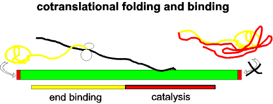

|
 |
A hypothetical IS is shown in green with the terminal inverted repeats in red. The transposase reading frame is represented in yellow (N-terminal) and red (C-terminal) domains corresponding to the sequence-specific DNA binding and catalytic domains respectively. The IS transcript is shown as a black line and the nascent protein as a yellow line. The ribosome is represented as two circles. Folding of the nascent N-terminal end is proposed to permit binding to the terminal IRs -indicated by the arrow). Once translation is completed, the C-terminal end (red line) folds in such a manner to preclude binding to the IR. |